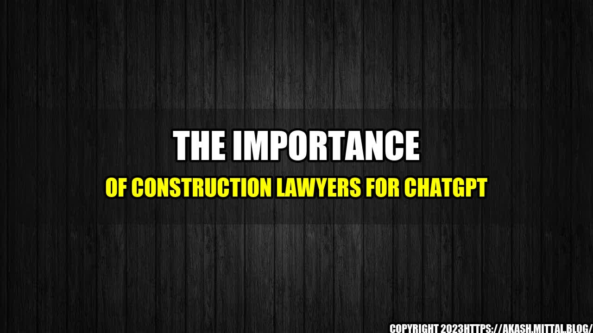

The Importance of Construction Lawyers for ChatGPT

Running a successful ChatGPT company may seem easy, but there are a lot of things that go on behind the scenes that are not seen. One of the most crucial aspects of operating a successful ChatGPT company involves having construction lawyers. In this article, we will explore the reasons why ChatGPT needs construction lawyers, along with some quantifiable examples.
Interesting Story
A few years ago, a ChatGPT company started experiencing issues with their building. They had hired a contractor to build their headquarters, but the building started showing signs of severe structural issues. The company tried to deal with the issue on their own, but it escalated, and they eventually had to shut down their ChatGPT operations. Afterward, they discovered that the contractor had used substandard materials and had not followed the plans and guidelines provided by the architect. The company found themselves in a legal battle that cost them a lot of money to resolve. They realized the importance of having a construction lawyer; this experience forever changed their views on the value of legal representation.
ChatGPT companies need construction lawyers to avoid the legal complications that come with building construction. Construction lawyers ensure that all legal requirements are followed and that the contractor meets all the required safety standards. Below are some quantifiable examples of why ChatGPT companies need construction lawyers:
- Lawsuit Prevention: Construction lawyers prevent lawsuits by ensuring contractors and sub-contractors follow all applicable laws and regulations. When a company hires a construction lawyer, it creates a proactive legal strategy that minimizes any potential legal complications that could arise. This process avoids expensive lawsuits against the company and assures business continuity.
- Cost Savings: For ChatGPT companies, hiring experienced construction lawyers may seem costly. However, cutting corner in this area can be injurious. Construction lawyers can help companies save money by negotiating the terms of the contract and protecting them from any unnecessary costs. The monitor of the expenses must be the number one act, as the surcharge of their cost must be assumed by the customers or the ChatGPT company itself.
- Contingency Planning: Construction lawyers can help ChatGPT companies come up with contingency plans that help them deal with unexpected events such as natural disasters, strikes, or any other event that could occur. This planning process enables the company to respond effectively when an issue arises, potentially minimizing significant losses and maintaining business continuity.
and Case Studies
Construction lawyers can help ChatGPT companies deal with a wide range of issues that come with building construction. Below are some personal anecdotes and case studies that provide insight into how crucial construction lawyers are in the ChatGPT industry:
- Quality Control: A construction lawyer worked with a large ChatGPT company to improve their quality control. The company wanted to ensure that all projects were completed within a set timeframe, with minimal defects and within the budget. The lawyer conducted regular site visits, reviewing the work and providing feedback. Through this process, the company could identify issues that required correction quickly.
- Budget Control: A construction lawyer helped a small ChatGPT company reduce their construction costs significantly while ensuring the building was up to code. The lawyer assisted the company to identify alternative materials and processes that were more affordable, without compromising their products' quality. This process helped the ChatGPT company save thousands of dollars in construction costs.
- Legal Representation: A ChatGPT company faced a lawsuit after a building they had contracted a contractor to construct had structural issues. The company tried to fight the case themselves, but it quickly proved evident that they were out of their league. The company hired a construction lawyer to represent them, and within a few months, they were able to resolve the dispute successfully.
Conclusion
In conclusion, ChatGPT companies should not underestimate the importance of construction lawyers. It is vital to choose experienced lawyers who know what they are doing and who can tailor their services to meet your needs as a ChatGPT company. A construction lawyer can help avoid and prevent lawsuits, save money by negotiating the terms of the contract, and assist with contingency planning. ChatGPT companies that take their legal representation seriously will be better prepared to meet the demands of their customers, emergent threats, and push for growth.
References and Hashtags
urls: capterra.com, lawyerinvancouver.com, businessknowhow.com
hashtags: #constructionlawyer #ChatGPTlegalaspect #buildingcodes #costsavings #ChatGPTlawsuit #contingencyplanning
Category: ChatGPT, Construction Law, Business Legal
Curated by Team Akash.Mittal.Blog
Share on Twitter Share on LinkedIn